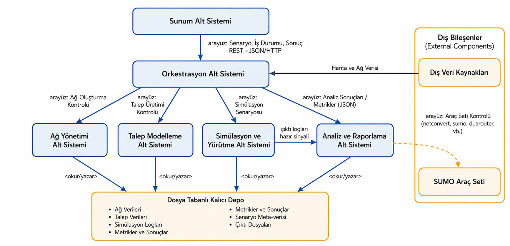
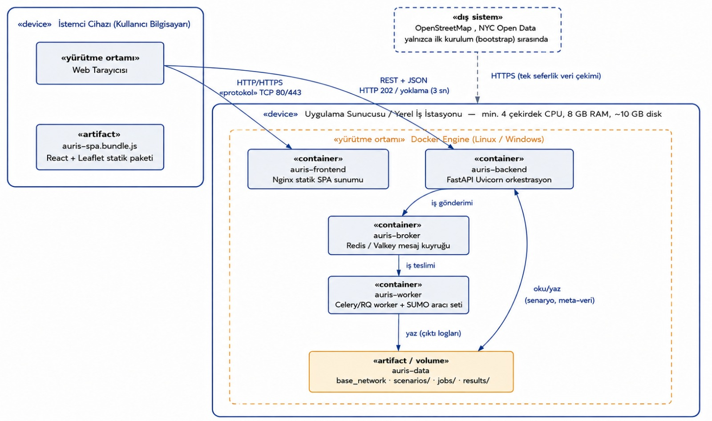

Bitirme Projesi · 2025-2026 Yaz Dönemi
Yolu kapatmadan
önce ne olur?
Auris, kentsel yol ağına yapılacak müdahalelerin trafiğe etkisini asfalt dökülmeden önce ölçen açık kaynaklı bir karar destek sistemidir. Bir şeridi kapatın, yolu tek yöne çevirin, kavşağa katılım şeridi ekleyin — sonucu haritada görün.
- Ortalama kavşak gecikmesi
- 45 sn
- Toplam seyahat süresi
- 1.284 dk
- Sıkışık segment
- 7 / 18
Bu şema, sistemin çalışma biçimini anlatan temsilî bir örnektir; gerçek simülasyon çıktısı değildir.
Problem
Yanlış kavşak kararının faturası yıllara yayılır
Belediyeler ve şehir plancıları trafik sıkışıklığını çözmek için yol geometrisine müdahale eder: şerit iptali, yayalaştırma, tek yön dönüşümü, kavşak düzenlemesi. Ancak bu müdahalelerin etkisi çoğunlukla ancak uygulandıktan sonra görülür.
Bir müdahale beklenen rahatlamayı getirmediğinde, hatta trafiği başka bir noktaya taşıdığında, geri dönüş maliyeti yüksektir. Mevcut simülasyon araçları ise ya yüz binlerce dolarlık lisans ücreti olan ticari yazılımlar, ya da XML dosyası düzenlemeyi ve komut satırı kullanmayı gerektiren akademik motorlardır. Arada, karar vericinin doğrudan kullanabileceği bir araç yok.
-
Ticari yazılımlar
Yüksek lisans maliyeti, özel iş istasyonu gereksinimi, haftalar süren sertifikasyon eğitimi.
-
Açık kaynaklı motorlar
Güçlü fizik modeli, ama son kullanıcı ürünü değil: elle XML düzenleme ve betik yazma gerektirir.
-
Auris
Motorun gücünü koruyup önüne harita tabanlı bir karar destek katmanı koyar. Kod yazmadan senaryo, sayısal sonuç.
Nasıl çalışır
Haritadan tıklayın, arkada boru hattı çalışsın
Kullanıcı yalnızca müdahaleyi tanımlar. Ağ kopyalama, doğrulama, rota hesaplama ve metrik çıkarma adımlarının tamamı arka planda, asenkron olarak yürür.
-
Müdahale
Harita üzerinde seçim
Yol segmenti veya kavşak seçilir, müdahale kataloğundan bir eylem eklenir. Sepette biriken müdahaleler tek seferde çalıştırılır.
-
Kopyalama
Ana harita korunur
Değişiklikler asla temel ağa yazılmaz. Her senaryo için izole bir çalışma kopyası üretilir; aynı ağdan sınırsız senaryo türetilebilir.
-
Doğrulama
Geçersiz ağ motora gitmez
Simülasyon başlamadan bağlantısallık denetlenir. Bir mahalleye erişimi tamamen kesen müdahale, kaynak harcanmadan reddedilir.
-
Simülasyon
Sürücüler yeni ağa uyum sağlar
Dinamik Kullanıcı Dengesi ile sürücülerin rota tercihleri iteratif olarak güncellenir; trafik yeni dengesine oturur.
-
Analiz
Ham log değil, karar verisi
Çıktılar ayrıştırılır; segment yoğunluğu, kavşak gecikmesi ve kuyruk uzunluğu hesaplanır, ısı haritasına dönüştürülür.
-
Uyarı
Gözden kaçan yan etki
Bir müdahale başka bir noktada darboğaz yaratırsa sistem bunu kendisi işaretler: yoğunluk eşiği aşıldığında harita üzerinde uyarı belirir.
Desteklenen müdahale tipleri
- Şerit kapatma / ekleme
- Tek yöne çevirme
- Yol tipi ve hız sınırı değişimi
- Hazır kavşak dönüşümü
- Katılım şeridi (slip-lane) ekleme
- Bypass / bağlantı yolu ekleme
Mimari
Alt sistemler ve veri akışı
Sistem, sorumlulukları ayrılmış altı alt sistemden ve bunların paylaştığı dosya tabanlı bir kalıcı depodan oluşur. Simülasyon motoru bir kara kutu olarak, alt süreç çağrılarıyla entegre edilir.


Teknoloji Yığını
- SimülasyonSUMO
- Veri işlemePython · OSMnx · Pandas
- SunucuFastAPI
- ArayüzReact · Leaflet
- DağıtımDocker
- Veri kaynağıOpenStreetMap · NYC Open Data
Belgeler
Proje raporları
Dönem boyunca hazırlanan mühendislik dokümanlarının tamamı açık erişimlidir.
-
Proje Önerisi
Problem tanımı, literatür, çözüm yaklaşımı, çalışma planı ve risk analizi.
-
Spesifikasyon Raporu
Fonksiyonel ve fonksiyonel olmayan gereksinimler, kısıtlar, etik ve lisans çerçevesi.
-
Analiz Raporu
Kullanım durumları, alan modeli, dinamik modeller ve arayüz taslakları.
-
Proje Kısıt ve Etkiler (PKE)
Uygulanan standartlar, proje kısıtları ve ileriye dönük etki beyanları.
-
Yüksek Seviye Tasarım (HLD)
Tasarım hedefleri, alt sistem ayrışımı, dağıtım, kalıcı veri yönetimi ve güvenlik.
Takım
Projeyi geliştirenler
-
Beril Aydın
Simülasyon motoru · Arayüz ve görselleştirme
SUMO yapılandırması, kalibrasyon ve doğrulama metrikleri ile React arayüzünün görselleştirme katmanı üzerinde çalışıyor.
LinkedIn -
Kaan Baykal
Veri entegrasyonu · Simülasyon motoru
Yol ağı verisinin işlenmesi, sentetik talep üretimi ve simülasyon boru hattının kurulmasından sorumlu.
LinkedIn -
Duygu Akman
Veri entegrasyonu · Sunucu ve senaryo yöneticisi
Talep modellemesi ile FastAPI tarafındaki senaryo yönetimi ve asenkron iş akışı üzerinde çalışıyor.
LinkedIn -
Yankı Yağız Ozan
Sunucu ve senaryo yöneticisi · Arayüz
API uçlarının geliştirilmesi, iş kuyruğu yönetimi ve harita tabanlı arayüzün kurulmasıyla ilgileniyor.
LinkedIn
İletişim
Proje hakkında soru sormak ister misiniz?
Kaynak kod, kurulum yönergeleri ve güncel geliştirme durumu için depoyu inceleyebilir; proje hakkındaki sorularınızı doğrudan takım adresine iletebilirsiniz.